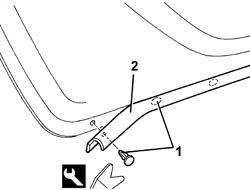

7010A46 LOWER REAR SIDE DOOR SEAL - R.R.
- Path
- Procedures > 70 FITTINGS > 7010 PASSENGER COMPARTMENT REAR SIDE DOORS > 7010A REAR SIDE DOOR ASSEMBLY > 7010A46 LOWER REAR SIDE DOOR SEAL - R.R.
- Kind
- repair procedure (removal / refitting; the operation number is the code)
- Applies to
- all engines; all production periods
- Interactive page
- https://sloeber94.github.io/elrnDB/#/939011162
Applies to: all engines; all production periods
 Removing
Removing
 Refitting
Refitting- Open the door.
1. Release the retaining buttons using the special tool.
Tool | Description | Function | Validity |
|---|---|---|---|
1823015000 | Knife | Retainer removal |
2. Keep the gasket.

Applies to: all engines; all production periods
Refitting
Removing- Check that the seal is not damaged.
- Place the seal in position and secure it using new retaining buttons.